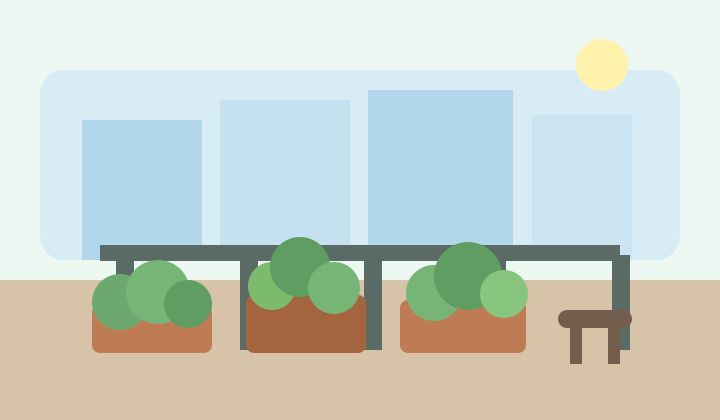

Build a Calm and Productive Outdoor Corner

Balcony gardening gives apartment dwellers a way to enjoy nature without leaving home. A well-planned balcony can become a place for morning coffee, evening reading, and steady plant growth all in the same small footprint. The most successful setups begin with a clear purpose, whether that purpose is growing food, creating a quiet retreat, or attracting a little extra life and color to an urban space.
Before buying plants, it helps to study how much sunlight the area receives, how strong the wind is, and how much weight the balcony can safely support. These details shape every later decision, from container size to watering frequency. Gardeners who take time to match plants to real conditions usually spend less money, waste fewer materials, and build a space that looks intentional instead of rushed.
A small balcony also benefits from thoughtful styling. Repeating containers, using a few complementary colors, and arranging plant heights from low to tall can make the space feel organized and welcoming. The goal is not perfection. The goal is a space that feels alive, useful, and easy to maintain during a busy week.
Quick planning idea: Start with three zones: one for edible plants, one for flowers, and one open area for movement or seating. That simple division keeps the balcony practical and attractive.
What Every Beginner Should Prioritize
Good drainage matters more than fancy containers. Pots should let excess water escape, and saucers should be checked often so roots do not sit in water for days. Using potting mix instead of dense garden soil also improves drainage and helps containers remain lighter and easier to move.
Regular observation is another key habit. A gardener who notices curling leaves, dry soil, or faded blooms early can usually fix the issue quickly. Waiting too long turns simple problems into frustrating ones.
Consistency beats intensity. Watering a little too late once in a while is normal, but long stretches of neglect are harder for container plants to recover from. A realistic routine is better than an ambitious plan that cannot last.
As you continue exploring the site, visit the Herb Garden page for edible ideas and the Pollinators page for flowers, insects, and a community signup form.
Image citation: Original illustration created by Codex for this student project, 2026.